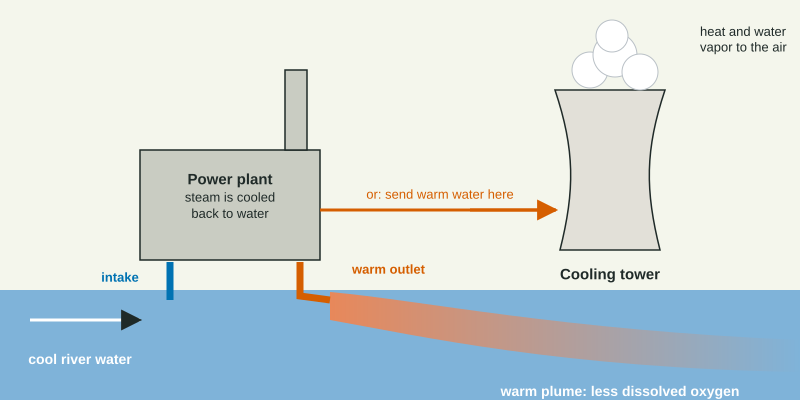

Most pollutants are substances. Thermal pollution is not a substance at all. It is heat, and it can change a river or lake as much as a chemical spill.
Where the heat comes from

Fossil fuel and nuclear power plants boil water into steam to spin a turbine. The used steam must be cooled back into water, and the cheapest way is to pump in water from a river, lake or sea, run it past the steam pipes, and send it back several degrees warmer. Factories do the same. Other sources warm water too: rain running off hot pavement and roofs, and the loss of shade trees along stream banks, which lets the sun heat the water.
Why warm water harms aquatic life
Gases dissolve better in cold water than in warm water. As water warms, the most oxygen it can hold falls, from about 14.6 mg per liter at 0 °C to about 7.6 mg per liter at 30 °C (USGS). At the same time, fish and other cold-blooded animals warm up with the water, their metabolism speeds up, and they need more oxygen. Supply falls as demand rises.
Worked example: how much less oxygen? Water warms from 15 °C, where it can hold 10.1 mg of oxygen per liter, to 30 °C, where it can hold 7.6 mg per liter. What is the percent change?
Setup: . Answer: , about a quarter less oxygen.
Other effects follow. Cold-water species such as trout and salmon disappear from warm stretches. Warm water can speed algae growth and the spread of fish diseases, and it can trigger spawning or migration at the wrong time. A thermal shock, a sudden jump or drop in temperature, can kill fish outright; this happens when a plant starts up or shuts down suddenly, or in winter when fish gathered in a warm plume are suddenly left in icy water.
Reading the data
In a typical data set, sites below an outlet are warmer and lower in oxygen, and sensitive fish are scarce, while sites far downstream recover as the water cools back toward the river's normal temperature. Describe both changes with numbers (18 to 29 °C, 9.0 to 6.4 mg per L), then explain the link through oxygen.
A common mix-up
Exam readers see students blame thermal pollution on metals, nutrients or radiation in the cooling water. Cooling water from a nuclear plant never touches the reactor core. The harm is the temperature, and the chain runs through dissolved oxygen.
Reducing thermal pollution
| Fix | How it works | Trade-off |
|---|---|---|
| Cooling tower | releases heat to the air, mostly by evaporating some of the water | costly; consumes water by evaporation |
| Cooling pond or canal | holds warm water until it cools before release | needs land |
| Limits on discharge temperature | a rule (policy) on how warm returned water may be | plants must invest to meet it |
| Shade trees along streams | block sun from heating the water | takes years to grow |